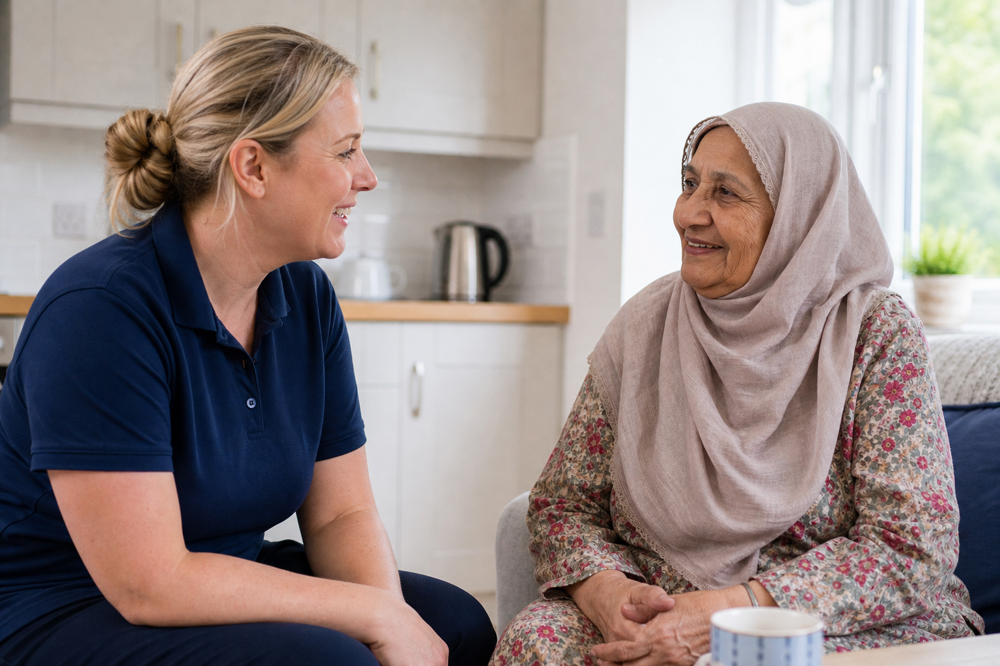
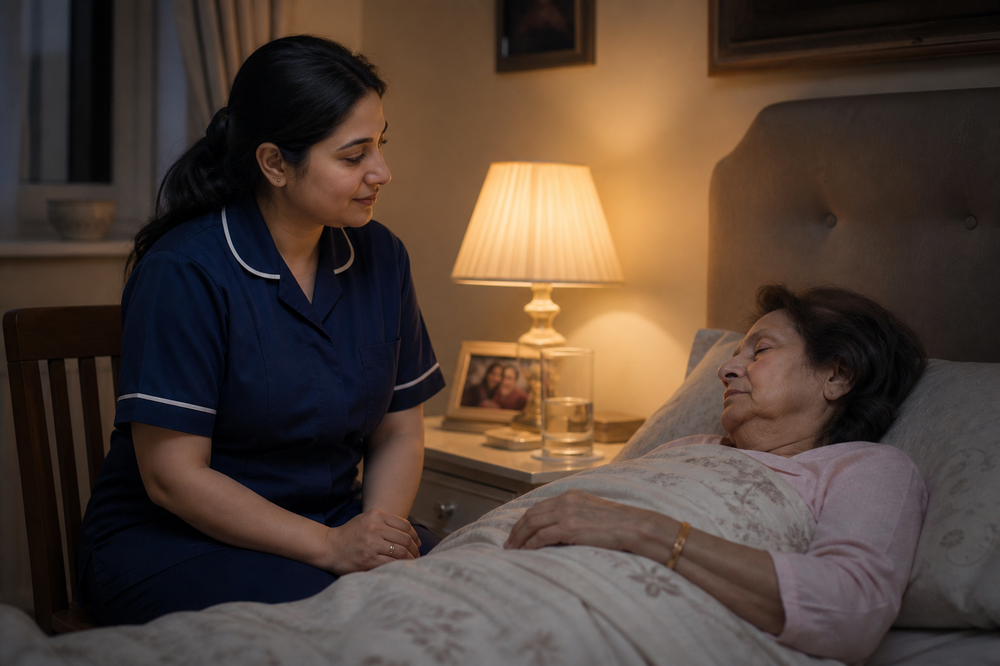

Meaningful work, every shift
Help people stay independent at home — meals, mobility, companionship, specialist support — with continuity that families notice.
Caretaz Healthcare
Careers With Purpose
Join a CQC-regulated Nottingham home care team where compassion is not a slogan — it is how every visit begins. Fair support, real training, and work that changes someone's day for the better.
Why This Work Matters
At Caretaz Healthcare, the people who open our clients' doors every morning are the heart of the company. We recruit for character first — then back you with induction, supervision and a culture that protects both the people we support and the people who support them.
Whether you are an experienced carer looking for a better team, or someone ready to start a meaningful career in health and social care, we want to hear from you.
The Team Picture
What You Get
We invest in people who invest in others — with practical support, clear pathways and a workplace that respects your time.
Help people stay independent at home — meals, mobility, companionship, specialist support — with continuity that families notice.
Structured induction, shadowing, medication and safeguarding refreshers, plus development for dementia, palliative and complex needs.
Visiting hours, evenings, nights and live-in options. We match availability honestly so your rota can work with your life.
Accessible managers, regular check-ins and a culture that backs you when situations are complex — you are never left guessing alone.
Transparent rates for the work you do, with travel support where applicable and opportunities to grow into specialist packages.
We guide you through enhanced DBS, references and paperwork so starting with Caretaz feels clear, safe and professional.
Open Pathways
Select a pathway to see what the work involves — then apply for the one that fits you best.
Most popular pathway
Deliver planned visits across Nottingham — personal care, medication prompts, meals, mobility and companionship. Ideal if you want variety, community routes and flexible hours.

Immersive support
Provide continuous presence for people who need round-the-clock reassurance. Live-in placements reward maturity, calm judgement and the ability to become a trusted part of someone's home life.
Night & waking cover
Support safer nights — waking or sleep-in patterns — for people who need reassurance, repositioning, continence support or someone close by until morning.

Skills with depth
Work with people living with dementia, Parkinson's, stroke recovery, cancer care or palliative needs. Training and matching ensure you are prepared — and never alone with complexity.
Who Thrives Here
Qualifications help. Kindness, reliability and respect are non-negotiable.
You notice the small things — a preferred cup, a favourite chair, the pace someone needs to feel themselves.
Families trust us because carers turn up, communicate clearly and treat every home with quiet professionalism.
You protect privacy, choice and independence — even on busy days when it would be easier to rush.
How Hiring Works
A clear, respectful process — so you always know where you stand.
Send the form or your CV. Tell us your experience, availability and the kind of care you love doing.
We meet, explore fit both ways, then complete DBS, references and induction training together.
You shadow experienced carers, get matched thoughtfully, and begin work with full team backup.
Apply Today
Share a little about your background and availability. A member of our Nottingham recruitment team will respond promptly to arrange a conversation.
Prefer email? Send your CV to info@caretazhealthcare.co.uk or call 0333 034 4121.
Takes a few minutes. No long online portal — just the essentials.
Expect a warm, practical conversation about roles, hours and what you want from the work.
Checks, training and shadowing — guided every step until you feel ready.
Before You Apply
Experience helps, but it is not always essential. We look for compassion, reliability and genuine respect for people. Where the fit is right, induction, shadowing and ongoing development help you grow into the role with confidence.
All carers complete an enhanced DBS check, provide suitable references and finish induction training before working independently. We guide you through each step and keep communication clear while checks are underway.
We offer visiting hours, evenings, overnight and live-in patterns. During recruitment we discuss your availability so we can match you to packages that work for your life as well as our clients' needs.
Yes. Alongside core induction, we support development for dementia, Parkinson's, stroke, palliative and other specialist pathways — so you feel prepared for the homes you are matched to.
We aim to respond promptly to every application. For the fastest reply, call 0333 034 4121 after submitting the form, especially if you are available to start soon.
Still unsure whether Caretaz is the right fit? We're happy to talk it through with no pressure.
Ready When You Are
Caretaz Healthcare is growing carefully — hiring people who want to do this work properly. If that sounds like you, we would be proud to have you on the team.
Apply now

Independent Oversight
Caretaz Healthcare is registered with and regulated by the CQC, the independent body overseeing health and social care in England. Our practices are assessed against national standards — the same standards that protect the people you will support.
We're also registered with the ICO, reflecting our commitment to protecting personal information — including yours as an applicant and colleague.